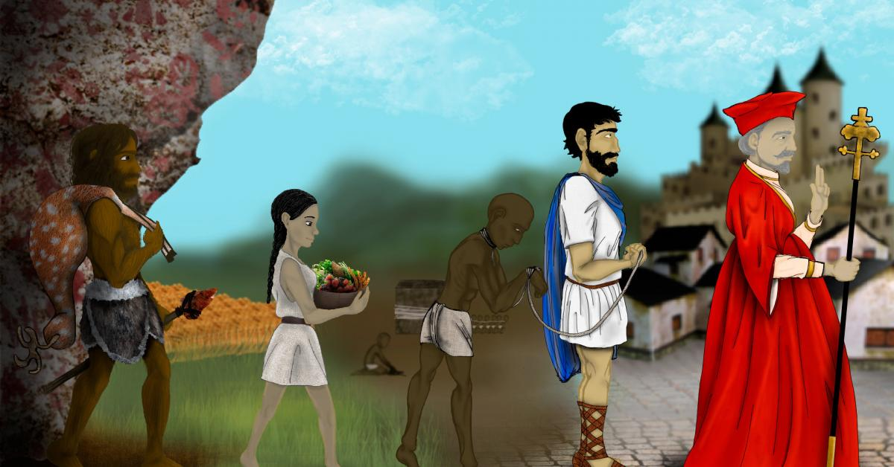

Tema 1 Parcial 2.
Conceptos fundamentales en la sociología que se refieren a cómo se organizan las relaciones sociales y económicas en una sociedad y cómo evoluciona con el tiempo.
La estructura social se refiere a cómo se organizan las personas en una sociedad, incluyendo las instituciones, las normas, los roles y las relaciones entre individuos y grupos. La estructura social puede incluir aspectos como la clase social, el género, la raza, la etnia, la religión y otros factores que influyen en la posición social de una persona en la sociedad.
El cambio social se refiere a cómo evoluciona la estructura social con el tiempo. El cambio social puede ser impulsado por factores como la tecnología, la economía, la política, la cultura y otros aspectos de la vida social. El cambio social puede ser gradual o abrupto, y puede tener efectos tanto positivos como negativos en la sociedad y en los individuos que la componen.
Los modos de producción son formas específicas en que se organizan la producción y la distribución de bienes y servicios en una sociedad. Los modos de producción se refieren a cómo se organizan las relaciones sociales y económicas en una sociedad y cómo se asignan los recursos.
Modo de producción primitivo: Es el modo de producción más antiguo que se conoce y se basa
en la propiedad comunal de la tierra y los recursos naturales, así como en la reciprocidad y el intercambio de bienes
y servicios.
Esclavismo: En este modo de producción, la producción se basa en la propiedad privada de los esclavos, que trabajan para sus dueños sin recibir remuneración.
El esclavismo fue común en la antigüedad en sociedades como la romana y la griega.
Feudalismo: En el feudalismo, la producción se basa en la propiedad de la tierra y el control de la producción por parte de los señores feudales. Los campesinos
trabajan la tierra y le entregan parte de la producción al señor feudal a cambio de protección y acceso a la tierra.
Capitalismo: En el capitalismo, la producción se basa en la propiedad privada de los medios de producción y la maximización del beneficio económico.
Los trabajadores venden su fuerza de trabajo a los dueños de las empresas a cambio de un salario.
Socialismo: En el socialismo, la producción y la distribución se basan en la propiedad comunal de los medios de producción y la planificación centralizada de la economía. El objetivo es satisfacer las necesidades de la sociedad en lugar de maximizar el beneficio económico.